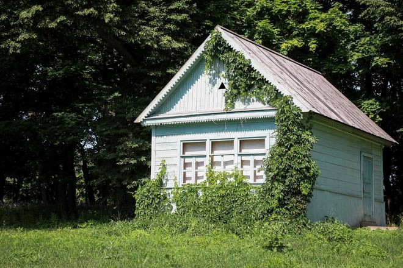

Ясная Поляна — усадьба в Щёкинском районе Тульской области (в 14 км к юго-западу от Тулы), основанная в XVII веке и принадлежавшая роду Толстых.
В ней 28 августа (9 сентября) 1828 родился Лев Николаевич Толстой, здесь он жил, здесь же находится его могила.
В 1921 году усадьба Льва Толстого была превращена в музей.
В 1986 году яснополянский музей получил статус Государственного мемориального и природного заповедника, в 1993 году — статус объекта культуры особо важного значения. В 1994 году на пост директора музея был назначен праправнук Льва Толстого Владимир Ильич Толстой.
Белые башенки с зеленой крышей и флажками-флюгерками — символ Ясной Поляны, самое узнаваемое строение усадьбы. Они были построены при деде Льва Толстого, Николае Волконском, в 1820-е годы. Изначально башенки служили вереями — то есть на них вешались массивные железные ворота, которые, как в средневековых замках, открывались для гостей только по воле хозяина усадьбы. Какое-то время они служили сторожками для часовых, где те могли укрыться от непогоды.
Николай Волконский очень любил парки — и в 1810-е годы разбил в Ясной Поляне большой английский парк, или «аглицкий сад». В этом парке часто гуляла мать Льва Толстого, Мария Волконская. Один из ее любимых маршрутов заканчивался вышкой-беседкой, откуда можно было смотреть на дорогу. Лев Толстой восстановил эту беседку в память о матери, умершей в 1830 году, когда он был совсем маленьким.
Теплицу, где сейчас растут ананасы, бананы, гранат, померанцы, артишоки, смородина, душица, лаванда, мята, полынь, розы, пионы, крокусы и многое другое, Лев Толстой обустроил в конце 1860-х, на месте оранжерей своего деда Николая Волконского.
Сейчас в Ясной Поляне живут 14 верховых и тяжеловозных лошадей разных пород, а также 5 шетлендских пони. Лошади в усадьбе были всегда. Лев Толстой обучался верховой езде с самого детства — вместе со своими старшими братьями Николаем, Сергеем и Дмитрием. В своих воспоминаниях писатель рассказывал, что всегда со стыдом вспоминал, как однажды решил покрасоваться перед братьями и долго бил хлыстом старую мирную лошадь, на которой их учили ездить, а она отказывалась скакать и все время поворачивала к конюшне.
Во флигеле Кузминских в 1859 году Лев Толстой открыл свою первую и самую знаменитую школу для крестьянских детей. Дети приходили сюда утром не к определенному часу, а когда освободятся от домашних и хозяйственных дел или, когда их отпустят родители; занятия длились примерно с 8 часов утра до 8–9 вечера, с одним или двумя перерывами в середине дня.
Привычных уроков с переменами и звонками не было, привычных для того времени телесных наказаний или стояния в углу на гречихе — тоже. Сидеть за партой в школе было не обязательно, можно было разместиться на полу или подоконнике, а если ученик уставал, он прямо на уроке мог подремать где-нибудь в уголке. Уроков на дом не задавали. Мальчики и девочки 7–13 лет изучали в толстовской школе 12 предметов: чтение, писание, каллиграфия, грамматика, Священная история, русская история, рисование, черчение, пение, математика, беседы из естественных наук, Закон Божий, но на занятии каждый делал то, что ему было интереснее.
Центральным элементом в архитектуре Ясной Поляны был большой барский дом с двумя абсолютно одинаковыми флигелями (сейчас дом-музей и литературный музей). Все эти три здания начали строить при деде писателя Николае Волконском, а закончили уже при отце Толстого, Николае. Окончательно Большой дом с флигелями был построен в 1824 году.
В этом просторном — 42 комнаты! — доме Лев Толстой родился и провел первые годы детства. Но после смерти отца будущий писатель, его братья и младшая сестра начали часто уезжать из родового имения, дом начал ветшать.
В этом просторном — 42 комнаты! — доме Лев Толстой родился и провел первые годы детства. Но после смерти отца будущий писатель, его братья и младшая сестра начали часто уезжать из родового имения, дом начал ветшать.
К сожалению, к в 1913 году дом был разобран до основания. В яснополянскую усадьбу удалось вернуть только одну деталь от бывшего жилища Льва Николаевича — камень из фундамента, на котором позже появилась надпись: «Здесь стоял дом, в котором родился Л. Н. Толстой».
Небольшой окрашенный в серо-голубоватый цвет деревянный домик, «павильон», был построен в 1888 году. Здесь в начале XX века открылась
ясно-полянская амбулатория, где любой нуждающийся мог бесплатно получить медицинскую помощь. Принимал больных домашний врач Душан Маковицкий.

Толстой поселился в этом флигеле, выйдя в отставку и вернувшись в Ясную Поляну в 1856 году, а через 6 лет, сразу после свадьбы, сюда приехала Софья Андреевна. Изначально дом был намного меньше, чем то, что мы видим сегодня, и выглядел абсолютно так же, как и флигель Кузминских. Но постепенно семья Толстых росла (у писателя и его жены было 13 детей), и вместе с ней рос дом. За 30 лет к дому сделали пять пристроек. Самая знаменитая появилась в 1892 году — терраса с резными балясинами.
В этом доме писатель провел около 50 лет, здесь, создал свои самые знаменитые произведения. В доме до сих пор хранится несколько десятков тысяч предметов, окружавших писателя: больше 20 000 книг с миллионом толстовских пометок, фотографии и портреты родственников и друзей, палкастул, которую Толстой брал на пешие прогулки.
Большой кожаный диван, на котором родился писатель, предок диктофона — фонограф, благодаря которому мы и сегодня можем услышать голос Льва Толстого; вечное перо и карандаш с фонариком — незаменимые помощники писателя в его литературном труде, и многое-многое другое.